המעבדות שלנו מכשירות בגאווה סטודנטים וחוקרים.
המעבדות מייצרות ידע חדש באמצעות תגליות תוך שימוש מעשי בכלים העדכניים ביותר. המגוון הרחב של מעבדות מאפשר לסטודנטים ולחברי הסגל ביטוי אישי עשיר. הפרויקטים במעבדות מונעים מתוך עניין מחקרי של חברי הסגל ובמסגרת שיתופי פעולה עם התעשייה.
מעבדת מחקר והוראה
מעבדת מחקר
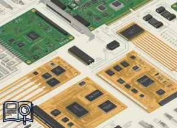
(ACTO) The Analog Converters, Transceivers & Optics

המעבדה ל VLSI

המעבדה ל-AI ודימות רפואי ב-MRI
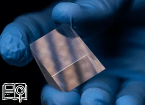
המעבדה לאופטואלקטרוניקה ננמוטרית וקוונטית
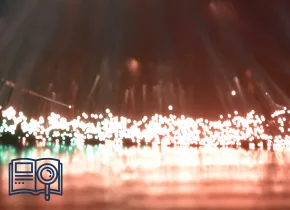
המעבדה לאופטיקה לא לינארית וסיבים אופטים

המעבדה לאלקטרואופטיקה
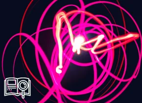
המעבדה לאלקטרודינמיקה
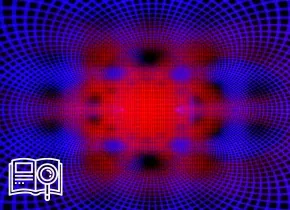
המעבדה לאלקטרומגנטיות חישובית
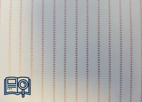
המעבדה לאלקטרומגנטיות יישומית
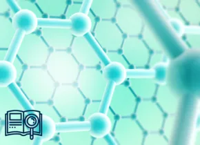
המעבדה לאלקטרוניקה נמוכת מימדים
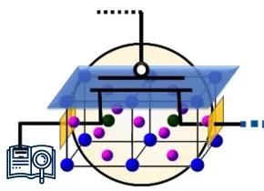
המעבדה לאלקטרוניקה של תחמוצות

המעבדה לאלקטרוניקת הספק ואנרגיות מתחדשות PEARL
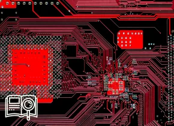
המעבדה לארכיטקטורה ומעגלים משולבים

המעבדה לבקרה רובוטיקה ולמידה חישובית

המעבדה לגרפיקה ממוחשבת ומולטימדיה

המעבדה לדימות היברידי

המעבדה לדימות ולחישה ביו-רפואיים
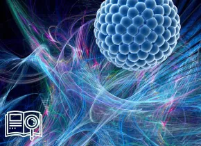
המעבדה להנדסה קוואנטית
המעבדה להתקנים ננו-אלקטרו-תרמיים
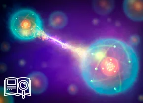
המעבדה להתקנים קוונטיים ואולטרא-מהירים מתקדמים
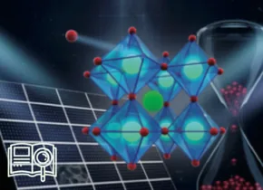
המעבדה לחומרים ורכיבים אורגניים

המעבדה לחקר רשתות ביולוגיות
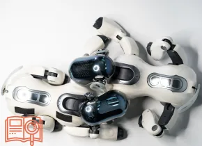
המעבדה ללמידה רובוטית

המעבדה למחקר פוטוני מתקדם
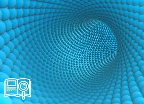
המעבדה למיקרו- וננו-פוטוניקה

המעבדה למיקרו-ננו אלקטרוניקה
המעבדה למעגלים משולבים בתדר גבוה
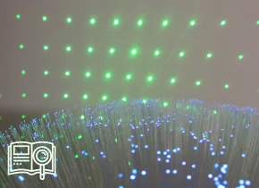
המעבדה למערכות אופטו-אלקטרוניות
המעבדה למערכות מחשב מואצות

המעבדה למערכות מרובות רובוטים MRS

המעבדה למערכות ספרתיות מהירות

המעבדה למערכות תכנה מרושתות
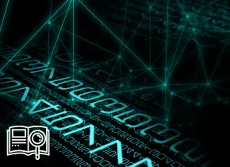
המעבדה לעיבוד אותות גיאומטרי

המעבדה לעיבוד אותות ותמונות
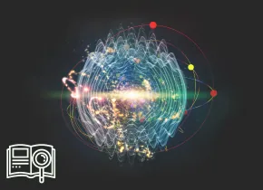
המעבדה לפוטוניקה קוונטית דינמית

המעבדה לפיסיקה של לייזרים
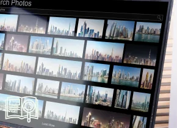
המעבדה לצילום חישובי
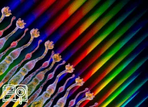
המעבדה לראיה וחישה
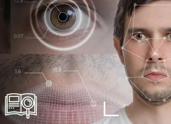
המעבדה לראייה ולמידה ממוחשבת

המעבדה לראייה ומדעי התמונה

המעבדה לתקשורת
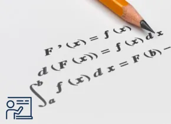
מעבדת יסוד בהנדסת חשמל